정림 디지털 아카데미 유닛 JAdU 2기 · 프로젝트 우수상
MVSF in NEOM네옴시티 모듈러 수직농장 설계 제안
- Program
- Junglim Academy Digital Unit · JAdU 2기 모듈러 프로젝트
- Year
- 2024–2025
- Type
- 모듈러 수직농장
- Site
- NEOM, The Line (사우디아라비아)
- Team
- 3조 · 6인
- My role
- 설계 · 다이어그램 · 모델링 · 렌더링
- Award
- 프로젝트 우수상
네옴시티에 들어갈 모듈러 수직농장 설계 제안
물과 경작지가 부족한 사막 위의 선형 도시 NEOM, The Line에 식량을 공급할 모듈러 수직농장(Modular Vertical Smart Farm)을 제안했다. 물고기 양식과 수경재배를 하나의 순환으로 묶는 아쿠아포닉스를 기본 시스템으로 삼고, 농장 · 공공 · 시장 프로그램을 같은 모듈의 조합으로 쌓아 올렸다.
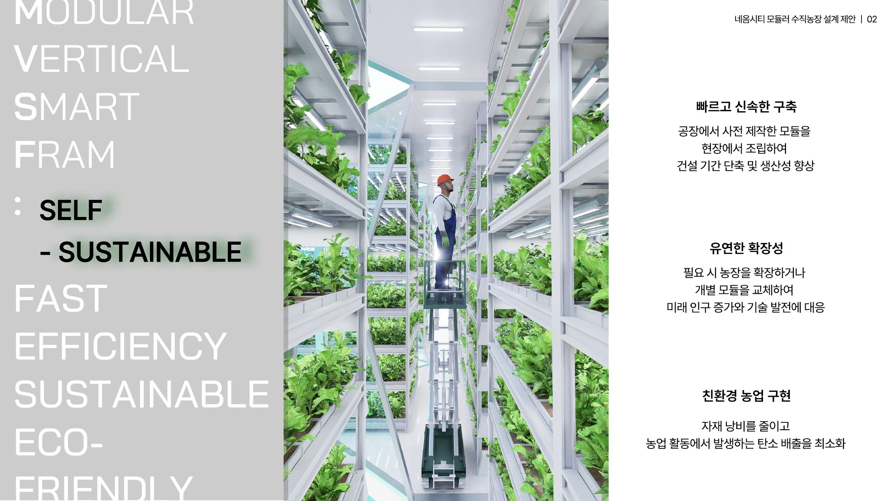
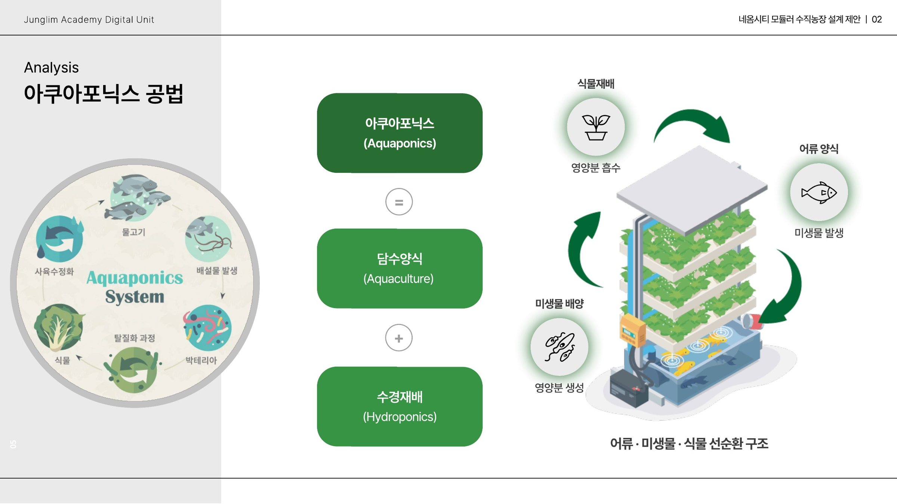
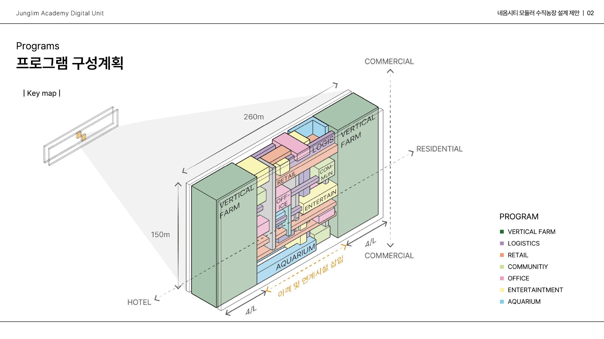
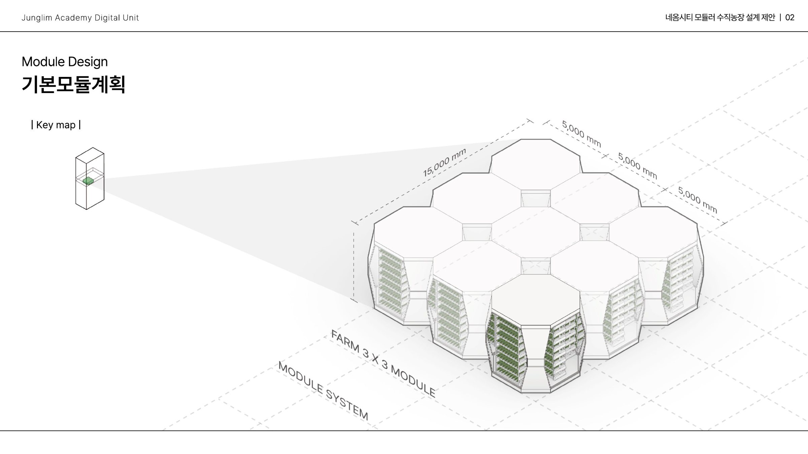
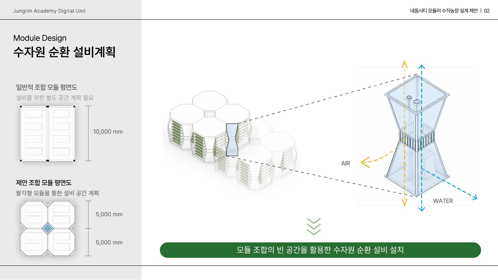
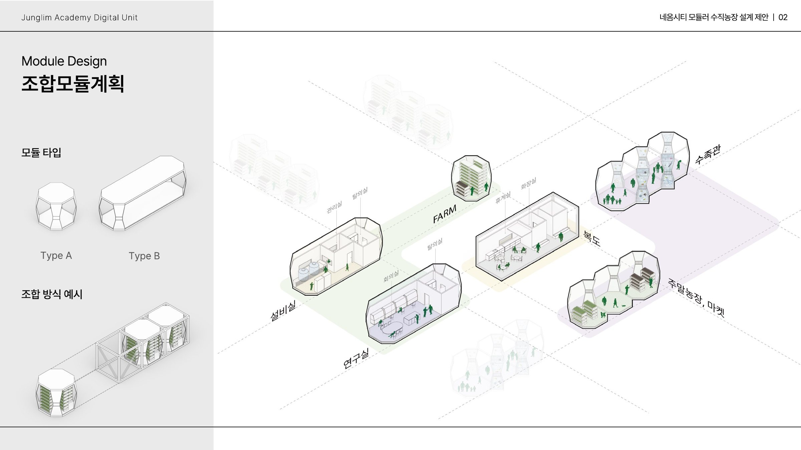
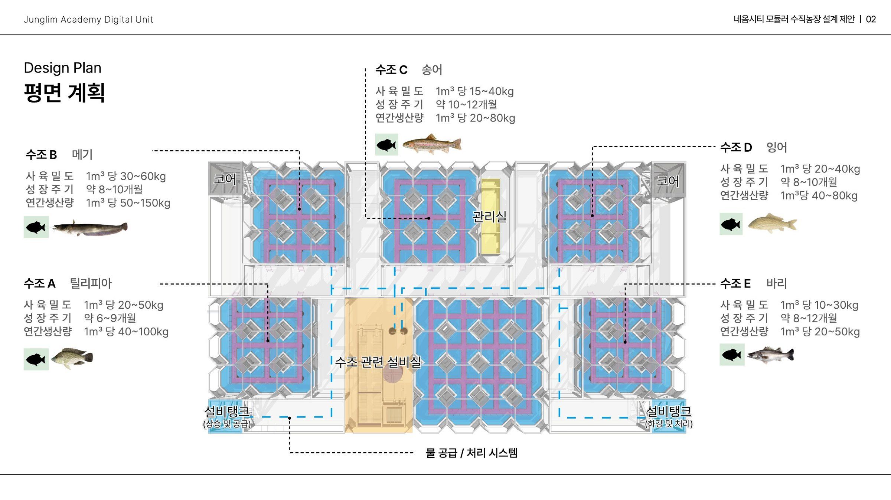
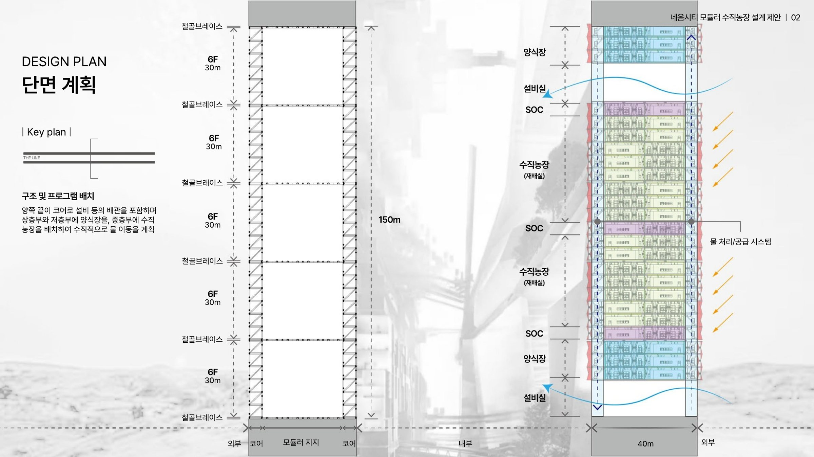
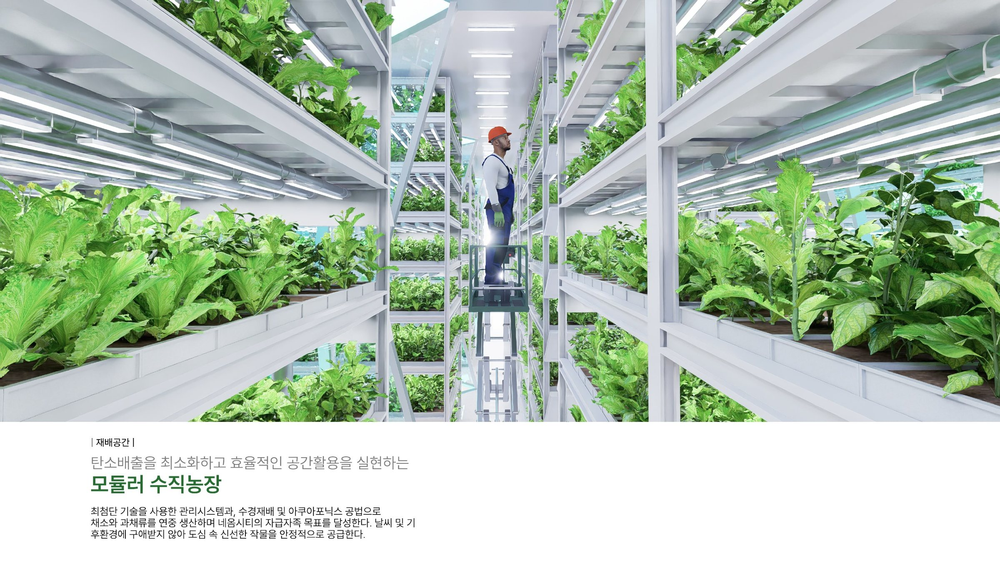
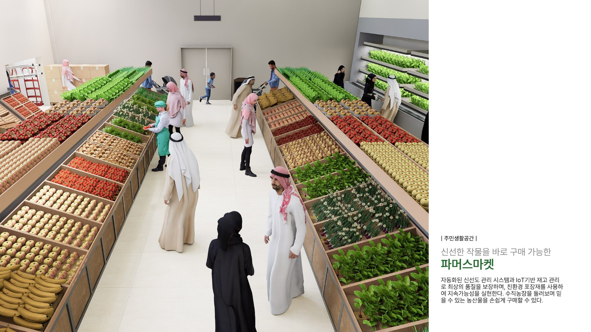
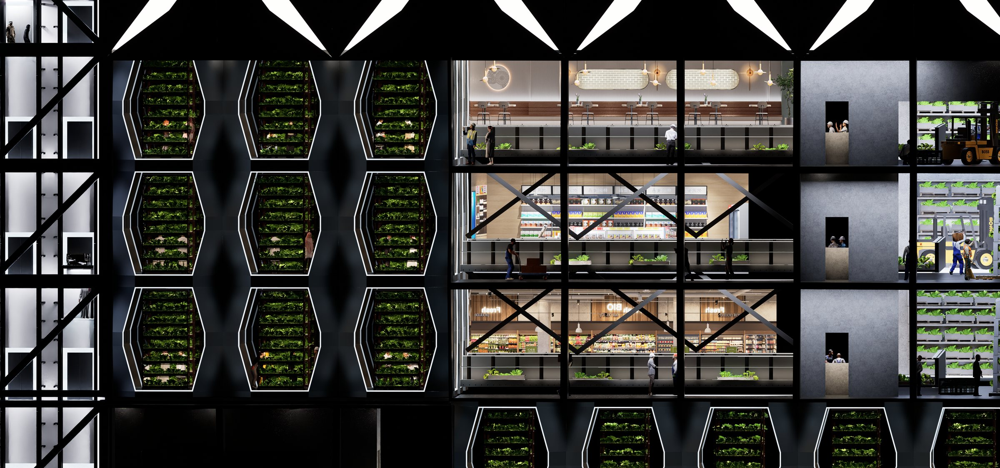
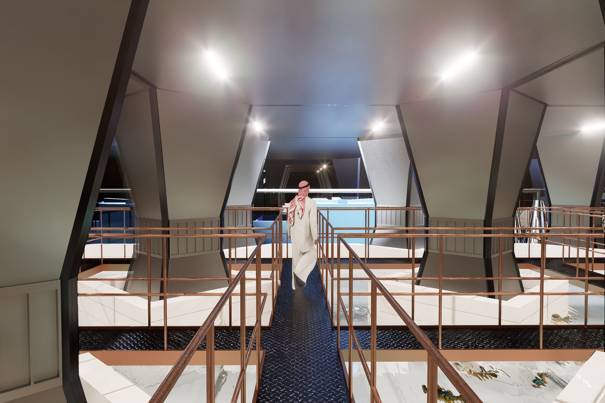
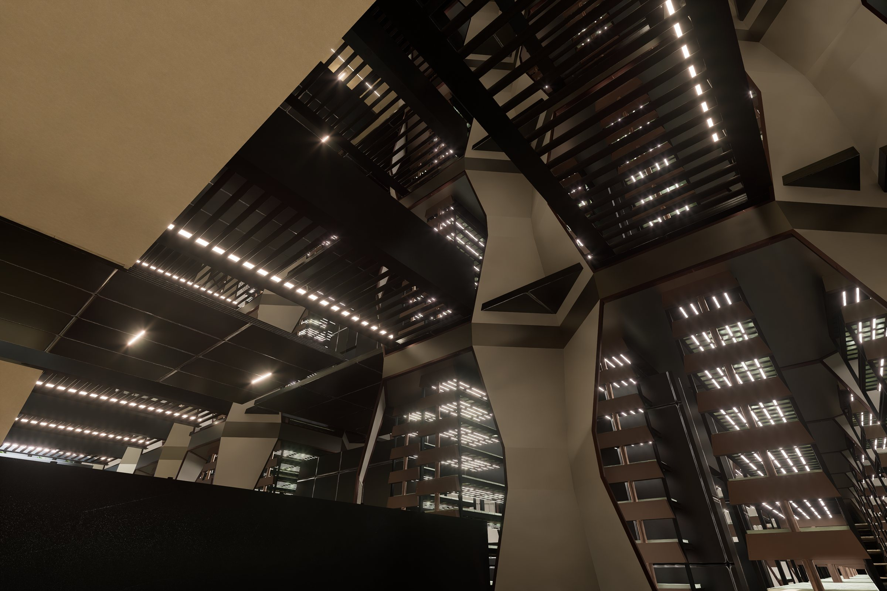
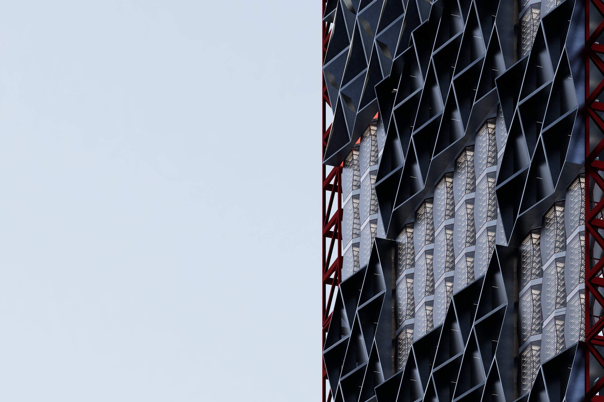
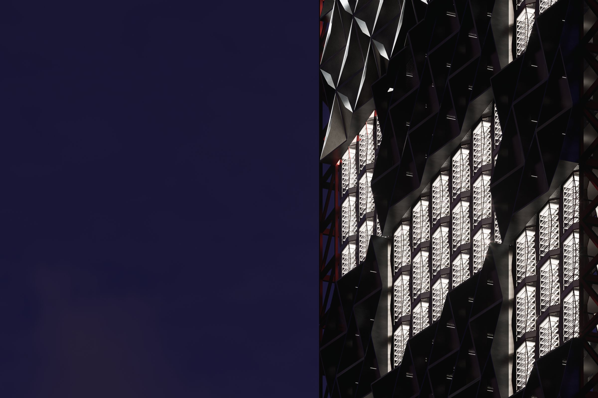